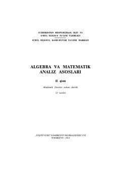

AVAkademik litseylar uchun algebra va matematik analiz asoslari darsligi.
Mazkur darslik akademik litseylar va kasb-hunar kollejlari o'quvchilari uchun mo'ljallangan bo'lib, algebra va matematik analiz asoslari fanining ikkinchi qismini o'z ichiga oladi. Qo'llanmada trigonometrik funksiyalar, limitlar, hosila, integrallar va differensial tenglamalar kabi mavzular batafsil yoritilgan.